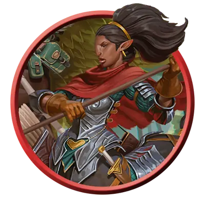

Кентавр-кавалерист
Centaur Trooper
Большая Фея, Нейтральная Добрая

Класс Защиты 16 Инициатива +2 (12)
Хиты 45 (6к10 + 12)
Скорость 50 футов
| мод | спас | ||
|---|---|---|---|
| СИЛ | 18 | +4 | +4 |
| ЛОВ | 14 | +2 | +2 |
| ТЕЛ | 14 | +2 | +2 |
| мод | спас | ||
|---|---|---|---|
| ИНТ | 9 | −1 | −1 |
| МДР | 13 | +1 | +1 |
| ХАР | 11 | +0 | +0 |
Чувства пассивное Восприятие 13
Языки Сильван, Эльфийский
Опасность 2 (450 опыта; БВ +2)
Действия
Мультиатака. Кентавр совершает две атаки Пикой или Длинным луком в любой комбинации.
Пика. Бросок рукопашной атаки: +6, досягаемость 10 фт. Попадание: 9 (1к10 + 4) Колющего урона.
Длинный лук. Бросок дальнобойной атаки: +4, дистанция 150/600 фт. Попадание: 6 (1к8 + 2) Колющего урона.
Бонусные действия
Затаптывание (Перезарядка 5–6). Кентавр перемещается на расстояние вплоть до значения его Скорости, не вызывая Провоцированных атак, и может перемещаться сквозь пространство существ Среднего размера или меньше. Каждое существо, в чьё пространство входит кентавр, становится целью следующего эффекта. Спасбросок Силы: Сл 14. Провал: 7 (1к6 + 4) Дробящего урона, и цель Опрокидывается.
Бонус мастерства +2
Среда обитания Город, Подземье
Сокровища Отсутствуют
Кентавры
Защитники Страны Фей
Кентавры — защитники лесов, равнин и мест сосредоточения первозданной силы. Эти существа с туловищем коня, но головой и грудью человека вступают в сражение со всеми, кто хочет навредить их союзникам.
Кентавры-кавалеристы — стражи лесов, издалека похожие на скачущих рыцарей. Многие из них доверяют только другим Феям.